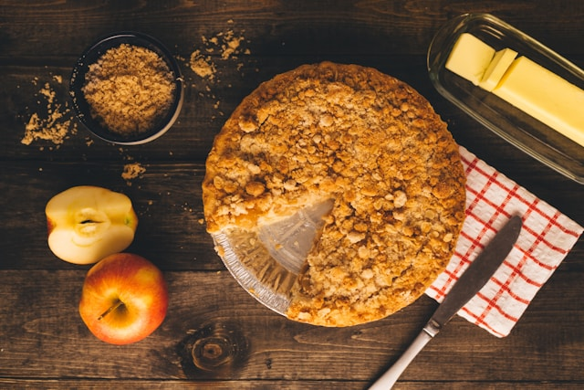

Home
Apple Pie

Description
Apple pie is a classic dessert with a warm, comforting flavor and a perfectly balanced sweetness. Tender apples
are baked with sugar and spices inside a flaky, golden crust. It is a timeless recipe that works just as well
for a cozy afternoon treat as for a festive dessert.
Ingredients
- Apples (peeled, cored, and sliced)
- Sugar
- Brown sugar
- All-purpose flour
- Ground cinnamon
- Ground nutmeg (optional)
- Lemon juice
- Butter
- Pie crust (top and bottom)
Steps
- Preheat the oven to 180 °C.
- Place the sliced apples in a large bowl.
- Add sugar, brown sugar, flour, cinnamon, nutmeg, and lemon juice, and mix well.
- Line a pie dish with the bottom crust and fill it with the apple mixture.
- Dot the filling with small pieces of butter.
- Cover with the top crust and seal the edges.
- Cut small slits in the top crust to allow steam to escape.
- Bake until the crust is golden brown and the filling is bubbling.
- Let the pie cool before slicing and serving.